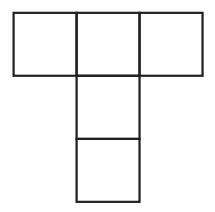

2026학년도 1학기 | 대수
I-1 '지수와 로그'에서 배운 거듭제곱근·지수법칙·로그의 성질을 한눈에 정리해 보자.
미래엔 교과서 37~39쪽 중단원 마무리 문제 (기본 → 표준 → 발전)
\(a,b,c\)를 각각 구하려 하면 막힌다. 공통값을 \(t\)로 두고 역수 \(\frac1a,\frac1b,\frac1c\)를 로그로 나타내는 것이 열쇠. 또 \(t=1\)이면 \(a=0\)이 되어 양수 조건에 어긋나므로 \(t\ne1\).

가로 합 + 세로 합에는 가운데(겹치는) 칸이 두 번 들어간다. 다섯 수 전체의 합만 더하면 틀린다. 가운데 칸 후보를 하나씩 따져 실제로 나눌 수 있는지 확인하자.
\(\log_{\sqrt2}a=\dfrac12\log_2a\) 로 잘못 바꾸는 실수가 많다. 밑이 \(2^{\frac12}\)이면 역수 \(2\)가 앞으로 나온다: \(\log_{\sqrt2}a=2\log_2a\).
스마트폰으로 우측 QR코드를 스캔하여, 아래 3가지 유형 중 하나 이상을 체크하고 통합 서술형으로 작성해 제출한다.